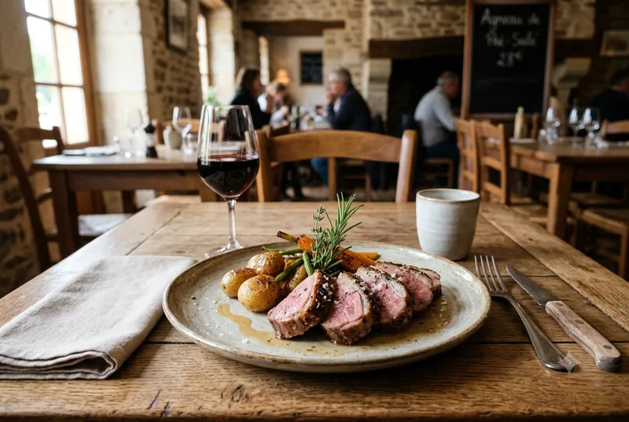

O Mont-Saint-Michel tem um prato famoso, uma dúzia de creperias e muitos cafés numa única rua estreita — quase todos pensados para a multidão do dia. Pode comer-se bem, mas convém saber o que se paga: a lenda, a vista ou simplesmente estar na ilha. Eis o que provar, onde comer na ilha e no continente, e como não ficar sem jantar à noite.
É mais fácil encaixar a comida no passeio do que o contrário. O audioguia autónomo da TouringBee pela ilha é um percurso de cerca de 2 horas que começa quando quiser: antes do almoço, depois da omelete ou ao fim da tarde, quando a vila esvazia.
Em resumo
- A famosa omelete da Mère Poulard é uma experiência e um pedaço de história, não um almoço barato; confirme o preço na carta atual.
- O mais simples na ilha é uma creperia da Grande Rue: galettes salgadas de trigo-sarraceno e crepes doces.
- Produtos locais a procurar nas cartas: o borrego dos prados salgados e os mexilhões da baía — ambos com denominação protegida AOP.
- No continente, junto ao parque (La Caserne), há mais escolha e costuma ser mais calmo.
- Reserve o jantar: os viajantes notam muitas vezes que à noite há bem menos sítios abertos na ilha.
A omelete da Mère Poulard: o que é e se vale a pena
O prato mais conhecido da ilha data do fim do século XIX, quando Annette Poulard tinha aqui uma estalagem para peregrinos e viajantes. A sua omelete — fofa, batida quase até espuma e cozinhada ao lume em frigideiras de cobre — ficou famosa, e a «Mère Poulard» entrou na história do monte. O restaurante com o seu nome continua à entrada da vila; os ovos são batidos num ritmo que se ouve da rua, e isso faz parte do espetáculo.
Sejamos claros: é uma omelete cara. Os preços da omelete sozinha e dos menus variam bastante consoante a fonte — de várias dezenas de euros por uma omelete a mais por um menu de degustação —, por isso veja a carta atual no site do restaurante antes de ir. Muitos viajantes descrevem-na como uma experiência que se paga uma vez, e não como a melhor relação qualidade-preço para uma refeição farta. Se quer o sabor sem uma refeição completa, os famosos biscoitos da Mère Poulard são um bom meio-termo: vendem-se na ilha e muito para lá dela, e são uma recordação clássica.

O que provar além da omelete
- Galettes e crepes. As galettes salgadas de trigo-sarraceno e os crepes doces são o almoço mais simples e previsível na ilha; há várias creperias na Grande Rue.
- Borrego dos prados salgados (agneau de pré-salé). Os borregos pastam nos prados à volta da baía que o mar inunda, e a carne tem um sabor especial. Procure «Prés-salés du Mont-Saint-Michel AOP» na carta.
- Mexilhões da baía. Os mexilhões criados em estacas (bouchot) na baía foram o primeiro marisco em França a receber AOP. A época é limitada, por isso não estão na carta todo o ano.
- Ostras de Cancale. Se seguir pela costa, Cancale fica a meia hora ou uma hora e é famosa pelas ostras (mais no nosso guia O Mont & Saint-Malo em um dia ).
- Sidra e sobremesas. Na Normandia e na Bretanha, a sidra é a bebida tradicional com as galettes.
Onde comer: ilha ou continente
Na ilha. A vantagem é o ambiente e estar já dentro das muralhas. As desvantagens: a multidão ao almoço, os preços turísticos e pouca escolha à noite. As melhores mesas, com vista para a baía, são as primeiras a ir.
No continente, junto ao parque (La Caserne e arredores). É aqui que ficam os hotéis e restaurantes para quem passa a noite; costuma ser mais calmo, e de alguns terraços vê-se o Mont. Se dorme no continente ou volta ao carro, é muitas vezes o mais prático para jantar (veja o nosso guia de onde ficar).
Uma dica: leve algum dinheiro — as condições de pagamento variam de sítio para sítio.

Quando comer: almoço e jantar
Almoço. Do meio do dia ao início da tarde a Grande Rue está no auge — e é também o pico nas creperias e cafés. Se puder, coma um pouco antes ou depois do habitual: a fila é mais curta e o passeio pela ilha mais calmo (mais sobre multidões e horários no nosso guia quando visitar ).
Jantar. Quem passa a noite nota muitas vezes o mesmo: quando os visitantes do dia partem, muitas creperias e lojas baratas da ilha fecham, e ficam abertos sobretudo os restaurantes de hotel. Por isso é melhor reservar o jantar — ou jantar no continente.
Piquenique. Outra opção é comprar comida no continente e comer ao ar livre com vista para a baía. O lixo, claro, vai connosco.
Entre refeições: a própria ilha
No Mont-Saint-Michel a refeição é uma pausa; o principal é a ilha. O audioguia autónomo da TouringBee leva-o das portas da vila pela Grande Rue até à abadia e pelas muralhas: 17 paragens, um percurso de cerca de 2 horas, um mapa GPS offline. Comece quando lhe der jeito — por exemplo, de manhã antes da multidão do almoço ou ao fim da tarde, quando a vila esvazia, e depois jante com calma. As histórias são escritas por historiadores locais e guias experientes, e é você quem as inicia em cada paragem. Um só pagamento, um ano de acesso, 8 línguas. A entrada na abadia não está incluída. Mais na nossa página do audioguia.
Encaixe a ilha no seu almoço
17 paragens, um percurso GPS offline, histórias escritas por historiadores locais — cerca de 2 horas, comece quando quiser.
Audioguia — a partir de €9,99~2 h de percurso · offline · um só pagamento · um ano de acesso
Dicas práticas
- Reserve o jantar na ilha, sobretudo na época alta.
- Coma antes ou depois do pico do almoço para evitar filas.
- Confirme o preço da omelete da Mère Poulard na carta atual, não em avaliações antigas.
- Procure produtos locais AOP: borrego dos prados salgados e mexilhões da baía.
- Leve água: a subida à abadia é longa e íngreme.
- Se dorme no continente, jantar lá é muitas vezes mais fácil e calmo.
Perguntas frequentes
Quanto custa a omelete da Mère Poulard?
Depende do formato e muda com o tempo; consoante a fonte, de várias dezenas de euros por uma omelete a mais por um menu de degustação. Veja a carta atual do restaurante.
A omelete da Mère Poulard vale a pena?
Se lhe interessam a história e o espetáculo, sim, como experiência única. Se só quer uma refeição farta e barata, uma creperia é mais simples.
Onde se come mais barato no Mont-Saint-Michel?
Normalmente nas creperias da Grande Rue ou no continente, junto ao parque. Outra opção é um piquenique com compras feitas no continente.
Pode-se jantar na ilha à noite?
Sim, mas há menos escolha do que de dia: muitos sítios baratos fecham mais cedo. É melhor reservar ou jantar no continente.
Que pratos locais vale a pena provar?
Galettes e crepes, borrego dos prados salgados (AOP Prés-salés du Mont-Saint-Michel) e mexilhões da baía (AOP), e como recordação os biscoitos da Mère Poulard.
A planear a seguir
Em conclusão
No Mont-Saint-Michel come-se bem se souber o que esperar: a omelete da Mère Poulard é história e espetáculo ao seu preço, as creperias um almoço simples, e o borrego e os mexilhões o verdadeiro sabor da baía. Coma fora do pico, reserve o jantar ou jante no continente — e dedique o tempo entre refeições à própria ilha, ao seu ritmo e com todas as suas histórias.
Alguns links nesta página levam ao nosso produto, o audioguia TouringBee. Não temos qualquer parceria paga com os restaurantes mencionados. Veja a nossa divulgação de afiliação.